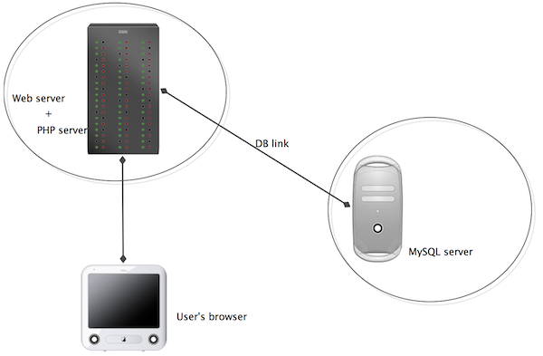

For this course, it's necessary to have access to a web server on which you can build your own web site using arbitrary tools. For this purpose, we are using "Edinburgh Domains", a service licensed to the University that provides each user with their own individual web server, and an associated domain name.
This is made available through the University's EASE login system: to register for it you should go to https://edinburgh.domains and click on the (not very obvious) link that says "SAML Login", then on the next page "Get Started".
On this server, you are very much in control -- you can install
software, change configurations, and many other things. It
provides for using the PHP language to process server scripts, and
it provides a MySQL database system, which we'll be using for the
projects in this course.
This is actually a custom version of a commercial service called
"Domain of One's Own" (DoOO) -- you'll find that some of the
instructional material (videos) on this course were made with the
commercial service, but the differences are minimal. Most web
service providers, in fact, use tools and systems that are very
similar to these, so skills that you learn with this arrangement
will be highly transferable to other situations.
Once you're into the Edinburgh Domains system, make sure that
you're looking at the "Dashboard". Here, you'll find links to an
impressive array of tools that you can use to do all kinds of
things. Specifically, we'll need to set up a database and make
sure that we can connect to the server using a protocoal called
SFTP. This is almost all that we'll need to do here -- most work
with the server subsequently will be done by simply using the
database through PHP.
The generic picture of the situation is like this:

The "Edinburgh Domains server" is actually a host that
hosts the MySQL server as well as the web and PHP servers, so when
you make a connection from PHP code you can connect to MySQL as on
"localhost", which means the same host as the PHP server. However,
if you want to connect to it from a different host, such as your
own machine, you will need to provide the appropriate host name
for your Edinburgh Domains MySQL server.
To access the Edinburgh Domains server, one option is work
throught its own online Dashboard, which provides a file manager
to manage the files you store on it, as well as management tools
for the database server, etc. However, this is quite inconvenient
and often we will want a more direct form of connection, which is
done through a method called SFTP (secure file transfer protocol).
There are many SFTP clients available, such as Cyberduck. You can
use any of these. But also, you can make SFTP connections directly
within PHPStorm, which allows you to manage the connection and
your project code in a very integrated way.
Before you can access your Edinburgh Domain through SFTP, you
have to configure it. In the Dashboard, you'll see at the very top
of the screen, no actually on the dashboard but above the
Edinburgh logo, a link that says "Manage you Account". On the
drop-down menu under this, choose "User Information". Then you
have the option to create an FTP password. It also tells you your
username, hostname and port -- these are the crucial details,
along with the password, that any SFTP client will need. Create a
password, and keep a note of it (though you don't need to use it
to create a new one if it gets lost). Then follow instructions for
connecting with your chosen SFTP client, or (as in the
introductory video) from inside PHPStorm.